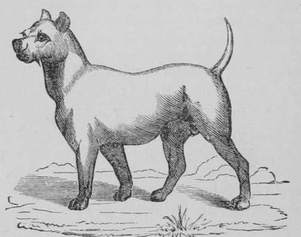

Bull Terrier
Description
This section is from the book "Breeding, Training, Management, Diseases Of Dogs", by Francis Butler. Also available from Amazon: Breeding, training, management, diseases.
Bull Terrier
In him, the Terrier and the Bull we trace, Well known to all, his famed, tho' compound race ; The sluggish Bull-dog, thus, new vigor gain3. The Terrier too, the former's pluck retains ; Thus stubborn courage and deliberate nerve, To check the hasty and impetuous serve. A Mongrel true, yet, tho' a Cur he be, If right his stamp, no better hound than he ; Defies the water, braves the very fire, Unites the merits of his Dam and Sire. To fix his size or color, were a jest, Yet true it is, the smallest sells the best; A doubtful title, but which some concede To ought that bears a shadow of the breed ; Of colors all, weight forty pounds to three, Too dwarfish for an honest pedigree. Apt as a scholar, faithful as a friend. Well armed and ready, valiant to defend ; He knows no danger, and he fears no foe, And if vindictive, man has made him so ; His instinct ever, on his duty set ; True Courage never was a Bully yet. Shou'.d any doubt, if this be true or not, Peruse the writings of Sir Walter Scott Mating in the system itself; yet from what particular influences, has not yet been satisfactorily determined. No antidote or safeguard against its attacks has yet been brought to light, neither has any sovereign remedy been effectual, in averting its fatality. The malady presents itself in such varied forms and types, that it is often not recognized as Distemper, even by those who have had some experience in Dog-keeping; whilst other and widely different ailments are often attributed to Distemper. Its appearance is not confined to any age, season or climate, neither is it peculiar to any breed, or the result of any particular kind of diet, locality or management. One breed is as subject to it as another, yet certainly not equally liable to become its victims. The worthless mongrel stands a far better chance of recovery than the appreciated pet or the high bred Sporting-dog. The reasons of this to me are evident. The cur is hardier, from his cross-breed and habits of exposure, and is naturally of a stronger constitution, consequently, the better fitted to resist disease ; is seldom pampered and gorged, gets more exercise and less physic. High bred dogs are always somewhat difficult to rear. There appears to lack in them a certain vigor of constitution, in which the cur is seldom deficient. For this reason, great care is requisite in the raising of choice breeds, till they attain their growth, or pass the ordeal of Distemper. It must not be supposed however, that all dogs must of necessity have the disease, any more than all children are bound to have the Small-pox or Scarlet fever. Again, some have it so lightly, that it is scarcely perceived, whilst others make short work of it, and snuff out in a canter, in spite of all efforts to save. The common symptoms are restlessness, heaviness, disinclination to move, redness and sometimes great paleness of the eye, whiteness of the gums, running at the eyes and nose, loss of appetite, looseness of the bowels, dryness and dirty appearance of the nostrils, dry cough, wasting of the flesh and general debility. Ulcers will often appear about the lips and gums, the breath becomes offensive, and the evacuations have a putrid odor. These indications do not appear at once, nor in all animals, neither can Distemper always be traced, when some of these symptoms are apparent. After all, the general appearance of the patient is more to be relied on than any one of these dis temper-like appearances. A marked difference will be perceived in the general deportment of the canine, which any observer of his general habits will not be at a loss to interpret. His owner should be in the habit of keeping a strict watch on him, now and then for a few minutes, without engaging the animal's attention ; as dogs, like men, are prone to wear a merry countenance, when the system is diseased. It is therefore necessary to scan their spontaneous movements, which is the plan I invariably adopt in discovering the most important of canine ailments. Of course their various parts may be likewise examined, in order to ascertain the very spot, where any disorganization may more visibly develop itself. Distemper appears to be more fatal at some periods than at others, without reference to any particular season of the year. I have however found it more fatal in the fall of the year than at any other season, especially on the first appearance of cold weather. It may attack a litter of puppies, some very lightly, some severely and others fatally, vet these have breathed the same air, eaten of the same food, occupied the game bed and received the same treatment. Who then shall prescribe an antidote against its inroads, or an absolute remedy against its fatality? Its effects nevertheless may in most cases be greatly mitigated by constant attention to the health of our charge, forbidding the least indisposition to pass unnoticed, and by resorting (as occasion may require) cither to gentle aperients, wholesome astringents, or moderate abstinence. I am averse to administering Calomel to dogs. It is decidedly dan-gerous, and thousands of poor animals have been sacrificed by it: it can only be given with comparative safety, where the animal would be subjected to no kind of atmospheric change, and this would be very difficult to avoid, as his coat cannot be conveniently thickened to suit the weather.
Bull Terrier
When a whitish mucus fluid runs from the nose, it is almost invariably a sign of distemper. This may be generally considered a favorable symptom, and far more favorable, than a dry hot nose, emitting little or no moisture ; in which case I have often found the disease settled on parts more vital and more difficult of relief. I beg of you not to consider Distem diarrhoea or dysentery, the best remedy I have found is 4th proof French Brandy, ground allspice and brown sugar, viz : a gill of French Brandy, a table-spoonful of ground allspice, and a heaped table-spoon of brown sugar. Mix the allspice and sugar in a saucer and stir in the brandy. Place this saucer and its contents on an inverted saucer, and set fire to the ingredients, and stir gently till the lire goes out. When cool enough, pour into a bottle, shaking it well, every time you pour off. Give the patient from half a tea-spoon to half a table-spoonful in twice or three times the quantity of water, every hour or two, till the looseness is checked. If the animal should be at anytime too costive, give small doses of castor oil as before recommended. With these simple remedies, the enemy may be kept at bay, and Dame Nature will have a fair chance of minding her own business, In a healthy dog the nose is cool and moist, and is consequently a very fair index to the general health ; although when the animal is consumptive, or much reduced in flesh, the nose, cars and extremities are all cold, from a lack of the power of general circulation. Small stimulative doses are then very useful ; a little weak, well-sugar ed brandy and water, every hour or two, with or without strong beef tea. according to necessity. Looseness is far more dangerous than costiveness, and far more difficult to arrest on a sure basis, as it should by no means be too suddenly checked by powerful astringents. The brandy and allspice compound before recommended, 1 consider to be the safest and most efficient. With this I have not only cured the most obstinate cases of Diarrhoea, but have restored animals, who appeared to have breathed their last. I once sharpened my knife to skin a favorite King Charles' Spaniel whom 1 supposed to be breathing his last, but suddenly changing my mind, I gave him three doses of this compound, at intervals of half an hour. After the first, he kicked out his hind leg, after the second he slightly raised his head ; after the third he tottered off several yards, and from that hour rapidly recovered. Remember, I am a powerful advocate of little and often, in all eases of prostration from disease, more especially in Distemper. Nature in an exhausted state is paralyzed by powerful doses, whilst she appropriates advantageously the pontic droppings. If stoppage should not yield to small hourly doses of castor oil, the bowels may be well rubbed, with brandy spirits of turpentine, or alcohol with spirits of camphor and ether. An injection of blood-warm soap-suds may be used and repeated every fifteen minutes till an operation is effected. Should this not succeed (and the patient be not inconveniently large), give him a bath, as hot as he can readily bear it, lor five or ten minutes; after which, rub him heartily and thoroughly dry : keep him well covered, till he has entirely recovered its effects and a natural reaction has taken place. I have however, very rarely failed with small doses of castor-oil, which I have occasionally persevered in for thirty-six hours. Of course on the first indication of relief, it must be stopped and small doses of light nourishing food be substituted. When the distempered dog shows heaviness about the eyes or giddiness, he should not be exposed to much light. As what effects the eye, effects the brain and what effects the brain acts on the whole system. A slight affection of the brain, requires in a dog, but little outer excitement to produce fits, which tendency should be checked. as much as possible.
Continue to:
- prev: Distemper, Diarrhoea, Constipation, Stoppage
- Table of Contents
- next: English Terrier, (Black & Tan)